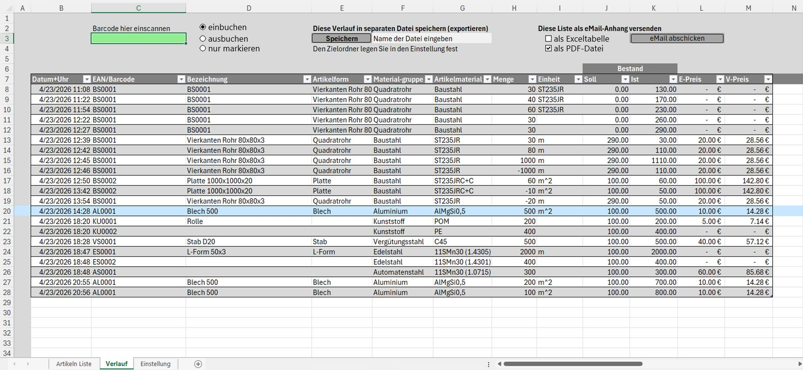

Universelle Filter-Funktion
Statt für jedes Blatt eine eigene Filterfunktion zu schreiben, nimmt eine einzige Funktion Blattname, Tabellenname sowie zwei Listen entgegen: die Suchbegriffe und die dazugehörigen Spaltennummern. So lässt sie sich für „Artikeln Liste“, „Reste“ und „Verlauf“ gleichermaßen wiederverwenden.
' Universelle Filterfunktion – funktioniert für jede Tabelle
Function TabelleFiltern(SheetName As String, TableName As String, _
SuchWerte() As String, SpaltenNummern() As Long) As Boolean
For i = LBound(SuchWerte) To UBound(SuchWerte)
If Trim(SuchWerte(i)) <> "" Then
' "*" erlaubt eine Teilsuche (enthält), nicht nur exakte Treffer
tbl.Range.AutoFilter Field:=SpaltenNummern(i), _
Criteria1:="*" & Trim(SuchWerte(i)) & "*"
End If
Next i
End Function
Eine zweite Funktion („DynamischFiltern“) liest die Suchfelder direkt aus benannten Zellen im Blatt aus – der Button auf dem Blatt „Artikel Liste“ ruft dazu nur eine Zeile Code auf:
Call DynamischFiltern("Artikel Liste", "Artikel_Liste", _
"E2,E4,E6,E8,E10,E12", "2,4,5,6,8,9")
Das Entfiltern läuft spiegelbildlich: AutoFilter zurücksetzen und die Eingabefelder wieder leeren.
Speichern & Export
Ein Button auf dem Dashboard löst den kompletten Export-Vorgang aus.
Ordnerpfad aus dem Dashboard lesen, prüfen ob mindestens ein Format (Excel und/oder PDF) angehakt ist.
Die drei Checkboxen (Artikel/Reste/Verlauf) auf dem Dashboard auslesen und in eine Liste der zu exportierenden Blattnamen umwandeln.
Papierformat (A3/A4) und Ausrichtung (Hoch/Quer) aus den Dashboard-Optionen übernehmen, Inhalt zwingend auf eine Seitenbreite anpassen.
Für jedes ausgewählte Blatt: PDF exportieren (falls gewünscht) und/oder als eigene Excel-Datei speichern – Dateiname automatisch mit Zeitstempel versehen.
E-Mail-Versand mit Wahl des Mailprogramms
Der Export lässt sich direkt im Anschluss automatisch per E-Mail verschicken – inklusive Anhängen.
Statt sich auf ein einziges Mailprogramm festzulegen, prüft das Modul, welcher Client gewünscht ist, und initialisiert das passende Objekt:
Outlook
Standardfall: Outlook wird per COM-Automatisierung direkt angesteuert (CreateObject("Outlook.Application")).
Gmail
Als Workaround wird das Gmail-Fenster im Browser aktiviert – im Code selbst als „Hack-Vorschlag“ kommentiert, da VBA Web-Gmail nicht direkt steuern kann.
Apple Mail
Auf Mac-Rechnern wird stattdessen Mail.Application angesprochen.
Betreff und Text werden automatisch erzeugt – kein manuelles Tippen nötig:
- Betreffsetzt sich aus den exportierten Blattnamen und dem heutigen Datum zusammen, z. B. „Lager_System - Stand: 05.05.2026“.
- Textenthält eine Liste der exportierten Blätter, Erstellungsdatum/-uhrzeit und den Windows-Benutzernamen als Unterschrift.
- Anhängewerden automatisch anhand des generierten Dateinamens im Zielordner gesucht und angehängt (PDF und/oder Excel).
- Entwurf oder Direktversandeine Checkbox „Check_Direktversand“ entscheidet, ob die Mail nur zur Kontrolle geöffnet (
.Display) oder sofort verschickt wird (.Send).
Erste funktionierende Version im Einsatz
Testdaten vom 23.04.2026 – das Verlaufsblatt beim tatsächlichen Ein- und Ausbuchen.

Reale erste Testläufe: Vierkantrohr 80×80×3 (Baustahl), Blech 500 (Aluminium), Rolle (Kunststoff), Stab D20 (Vergütungsstahl) – jede Buchung mit Zeitstempel, Menge, Soll-/Ist-Bestand und automatisch berechnetem V-Preis.